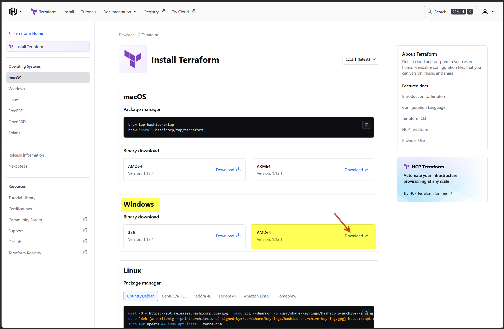

Terraform on Windows
What Is Terraform?
Terraform is an open-source Infrastructure as Code (IaC) tool developed by HashiCorp. It lets you define, provision, and manage cloud infrastructure using declarative configuration files written in HCL (HashiCorp Configuration Language).
With Terraform, you can:
- Spin up cloud resources (VMs, networks, databases) across providers like AWS, Azure, GCP
- Version-control infrastructure like code
- Preview changes before applying them (
terraform plan) - Automate deployments and reduce manual setup
How to Install Terraform on Windows
Step 1: Download Terraform
Go to https://developer.hashicorp.com/terraform/install
Choose Windows → Select your system architecture (usually AMD64)
Download the .zip file:
